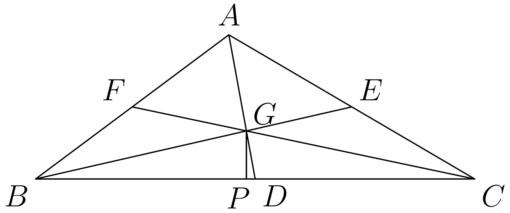

△University of Maryland, College Park,▲University of Pennsylvania,★University of Southern California, ♣University of Michigan♦The Hong Kong University of Science and
Technology *Equal contribution. †Equal advising.
Key Insights: Cross-modal reasoning correlates with visual generation; current models show limited visual reasoning.
Figure 1:The ROVER benchmark. ROVER evaluates UMMs through reciprocal cross-modal reasoning: ROVER-IG (left) requires generating images with language-augmented reasoning, while ROVER-TG (right) requires generating text answers with visually-augmented reasoning.
Unified multimodal models (UMMs) have emerged as a powerful paradigm for seamlessly unifying text and image understanding and generation. However, prevailing evaluations treat these abilities in isolation, such that tasks with multimodal inputs and outputs are scored primarily through unimodal reasoning, i.e., textual benchmarks emphasize language-based reasoning, while visual benchmarks emphasize reasoning outcomes manifested in the pixels. We introduce ROVER to address this pressing need to test reciprocal cross-modal reasoning, the use of one modality to guide, verify, or refine outputs in the other, an ability central to the vision of unified multimodal intelligence. ROVER is a human-annotated benchmark that explicitly targets reciprocal cross-modal reasoning, which contains 1312 tasks grounded in 1876 images, spanning two complementary settings. Verbally-augmented reasoning for visual generation evaluates whether models can use verbal prompts and reasoning chains to guide faithful image synthesis. Visually-augmented reasoning for verbal generation evaluates whether models can generate intermediate visualizations that strengthen their own reasoning processes for question answering. Experiments on 17 unified models reveal two key findings: (i) Cross-modal reasoning determines visual generation quality, with interleaved models significantly outperforming non-interleaved ones; notably, combining strong unimodal models fails to achieve comparable reasoning. (ii) Models show dissociation between physical and symbolic reasoning: they succeed at interpreting perceptual concepts literally but fail to construct visual abstractions for symbolic tasks, where faulty reasoning harms performance. These results highlight reciprocal cross-modal reasoning as a critical frontier for enabling true omnimodal generation.
ROVERBenchmark Statistics
ROVERData Viewer
ROVER-IG
Original Data Chart Placeholder
Prompt:
Generate a detailed scientific diagram showing the molecular structure of water, including accurate bond angles and electron cloud representations. Use clear labels and a clean, academic style suitable for a chemistry textbook.
Nano Banana
Generated Image Placeholder
GPT-5
Generated Image Placeholder
BAGEL-Think
Generated Image Placeholder
Qwen-Image
Generated Image Placeholder
ROVER-TG

Original Data Chart Placeholder
Prompt:
Generate a detailed scientific diagram showing the molecular structure of water, including accurate bond angles and electron cloud representations. Use clear labels and a clean, academic style suitable for a chemistry textbook.
Answer:
Expected answer will be displayed here.
Nano Banana
Generated Image Placeholder
Generated text response will appear here...
GPT-5
Generated Image Placeholder
Generated text response will appear here...
ROVER Benchmark
Benchmark Overview:ROVER introduces the first benchmark specifically designed to evaluate reciprocal cross-modal reasoning in unified multimodal models. Unlike existing benchmarks that evaluate modalities in isolation, ROVER requires models to use information from one modality to inform and improve outputs in another.
Figure 2: Verbally-Augmented Reasoning for Visual Generation.
The benchmark spans 4 domains (natural science, culture and art, common sense, and logic), instantiated across 7 reasoning subtasks.
Figure 3: Visually-Augmented Reasoning for Verbal Generation.
The benchmark spans 3 scenarios and 6 subtasks: physical world modeling, logic & math, and visual perception.
Verbally-Augmented Reasoning for Visual Generation:
This setting evaluates whether models can use structured verbal prompts and reasoning chains to guide faithful image synthesis. It spans 4 domains (natural science, culture and art, common sense, and logic) instantiated across 7 reasoning types: temporal, spatial, causal, synthetic, quantitative, abstract, and mathematical. Each task provides a textual prompt with an initial image and a chain of constraints that a correct output image must satisfy, requiring genuine visual understanding and complex reasoning chains.
Visually-Augmented Reasoning for Verbal Generation:
This setting evaluates whether models can generate intermediate visualizations that strengthen their own reasoning processes. Unlike text-only Chain-of-Thought, we examine scenarios where models generate intermediate visual representations to facilitate reasoning. The benchmark focuses on 3 scenarios: physical world modeling (functioning as world simulators), logic and math (generating visual aids for symbolic problems), and visual perception (creating supportive images for challenging perception tasks).
Evaluation Protocol
Multi-Dimensional Assessment:
We adopt a multi-dimensional protocol that combines an automated VLM judge - GPT-4.1 with expert validation on stratified samples.
Verbally-Augmented Generation Metrics:
We assess model performance across 5 rubric dimensions: (1) Reasoning Process (RP) evaluates the quality of verbal reasoning through logical structure and domain knowledge application; (2) Reasoning Visual (RV) measures how well generated visuals match target descriptions; (3) Reasoning Alignment (Align.) quantifies consistency between verbal reasoning and visual outcomes; (4) Visual Consistency (VC) ensures non-target elements remain unchanged; (5) Image Quality (IQ) assesses technical excellence and visual coherence.
Visually-Augmented Generation Metrics:
We evaluate across 3 dimensions: (1) Interleaved Reasoning Quality (IR) evaluates plausibility and relevance of intermediate visual representations; (2) Final Answer Accuracy (Acc.) measures whether the model's final reasoning outcome matches ground truth; (3) Reasoning-Answer Alignment (Align.) quantifies how effectively generated images contribute to reaching correct conclusions.
ROVER Leaderboard
The table shows ROVER-IG performance (Reasoning Visual, RV) with four domain columns (Nature Science, Culture/Art, Common Sense, Logic), and ROVER-TG performance (Accuracy, Acc.) with three categories (World Model, Logic & Math, Visual Perception).
Model
Organizor
Date
ROVER-IG
ROVER-TG
Nature Science
Culture & Art
Common Sense
Logic
Average
World Model
Logic & Math
Visual Perception
Average
Qwen-Image-Edit EDIT
2025-09
46.7
62.5
53.1
30.4
47.1
-
-
-
-
FLUX.1 Kontext EDIT
2025-06
37.4
44.9
42.3
20.2
40.9
-
-
-
-
UltraEdit(SD3) EDIT
2024-07
27.0
45.2
27.9
25.2
34.6
-
-
-
-
VAREdit-8B EDIT
2025-08
34.6
46.5
33.6
17.4
37.5
-
-
-
-
Step1X-Edit v1.1 EDIT
2025-04
38.2
50.5
35.2
16.1
42.1
-
-
-
-
Step1X-Edit v1.2 Open Source
2025-09
46.2
50.6
46.1
18.4
57.4
-
-
-
-
Nano Banana Proprietary
2025-08
77.3
76.6
74.8
55.1
73.2
40.6
44.9
50.0
43.6
GPT-5 Proprietary
2025-08
71.3
72.6
65.3
45.8
63.7
39.2
45.6
45.5
43.4
BAGEL-Think Open Source
2025-05
54.0
63.7
55.9
20.8
52.7
26.6
24.6
34.1
28.4
Gemini 2.0 Flash Proprietary
2025-02
68.8
71.9
66.1
42.6
62.3
35.6
30.4
43.0
36.3
UniCoT Open Source
2025-07
38.2
63.9
56.3
21.5
47.4
26.7
21.7
34.1
27.5
BAGEL Open Source
2025-05
35.9
49.2
42.0
27.1
40.5
-
-
-
-
UniPic2-Metaquery-9B Open Source
2025-04
33.8
52.7
43.2
27.1
39.2
-
-
-
-
BLIP3o-NEXT Open Source
2025-08
38.2
47.5
43.3
22.5
37.8
-
-
-
-
Emu2-Gen Open Source
2025-02
29.1
42.6
37.4
20.3
32.3
-
-
-
-
OmniGen2 Open Source
2025-06
27.4
42.3
39.2
20.2
32.2
-
-
-
-
Ovis-U1 Open Source
2025-06
28.6
44.3
42.1
20.5
33.8
-
-
-
-
ILLUME+ Open Source
2025-04
28.1
43.2
36.9
20.1
32.0
-
-
-
-
Findings and Insights
We conducted comprehensive evaluation of 17 state-of-the-art unified multimodal models across both settings in ROVER. Our experiments reveal critical insights about the current state and limitations of cross-modal reasoning capabilities in modern UMMs.
Key Finding 1
Interleaved image-text generation models significantly outperform non-interleaved ones, demonstrating that cross-modal reasoning is essential for high-quality reasoning-dependent visual generation.
Key Finding 2
Combining strong unimodal models fails to replicate cross-modal reasoning on ROVER, indicating that reciprocal cross-modal reasoning emerges only through unified multimodal architecture, not through external composition.
Key Finding 3
Models show a fundamental gap between physical and symbolic reasoning: while excelling at literal visual interpretation for perceptual tasks, they struggle to construct visual abstractions as symbolic representations, leading reasoning failures to harm rather than improve performance.
Cross-Modal Reasoning Matters for UMMs:
To validate that UMMs perform cross-modal reasoning internally and that this mechanism cannot be replicated through external models, we conducted comparative analysis between unified models and cascade approaches. Results demonstrate that reasoning across modalities cannot fully transfer across different model architectures—unified models must transcend modality boundaries to produce emergent cross-modal insights.
Figure 6: Cascade reasoning evaluation comparing cascade approaches (FLUX+GPT with GPT-4o prompt refinement) against unified multimodal models.
Do visual reasoning artifacts help?:
To investigate whether visual reasoning artifacts from UMMs can enhance downstream reasoning in VLMs, we conduct a controlled study where visual reasoning outputs from unified models assist VLM reasoning.
Key findings reveal that visual reasoning quality determines its effectiveness:
(1) UMMs successfully augment VLMs on perceptual tasks. Visual reasoning improves Qwen2.5-VL-7B's performance on physical world modeling and visual perception tasks, where UMMs generate reliable visual intermediates.
(2) Low-quality visual reasoning hinders rather than helps, when UMMs struggle to produce valid symbolic visual representations.
Figure 7: Visual reasoning augmentation evaluation across three problem domains. We compare VLM performance w/ and w/o visual reasoning artifacts from UMMs.
Coherence Between Reasoning Subtasks:
Analysis reveals uneven performance across reasoning dimensions, with models excelling in temporal, spatial, and causal reasoning while struggling with abstract and mathematical tasks. This pattern indicates that current UMMs better handle concrete, observable phenomena than symbolic reasoning. Strong interdependence among physical reasoning types suggests shared mechanisms for processing spatiotemporal relationships, while abstract reasoning develops as a distinct capability.
Figure 8: Analysis of reasoning capabilities showing performance patterns across different reasoning subtasks and their correlations.
Evaluation Protocol Reliability:
We conducted user studies with 4 human experts to validate our VLM-as-judge evaluation protocol. Results demonstrate strong alignment between GPT-4.1 and human expert judgments across all evaluation dimensions. Visual-quality-related metrics show particularly strong human-VLM agreement, while reasoning-related metrics exhibit larger but acceptable discrepancies due to inherent complexities in multimodal reasoning assessment.
Figure 9: Evaluation reliability of GPT-4.1 across five assessment dimensions, showing Pearson correlation coefficients and Mean Absolute Error compared to human experts.
Conclusion
We introduce ROVER, the first benchmark for reciprocal cross-modal reasoning, which systematically evaluates 17 unified multimodal models across 23 diverse task types in both verbal reasoning for visual generation and interleaved multimodal reasoning scenarios. Our evaluation exposes substantial performance gaps in current models and establishes that interleaved generation capabilities are strongly correlated with cross-modal reasoning effectiveness. These findings expose critical limitations in existing unified models and provide insights for advancing cross-modal reasoning capabilities in future omnimodal models. ROVER represents a critical step toward enabling true omnimodal generation through reciprocal cross-modal reasoning.